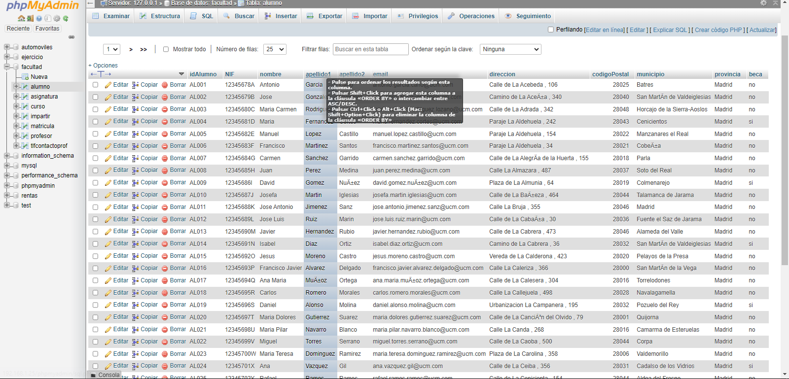
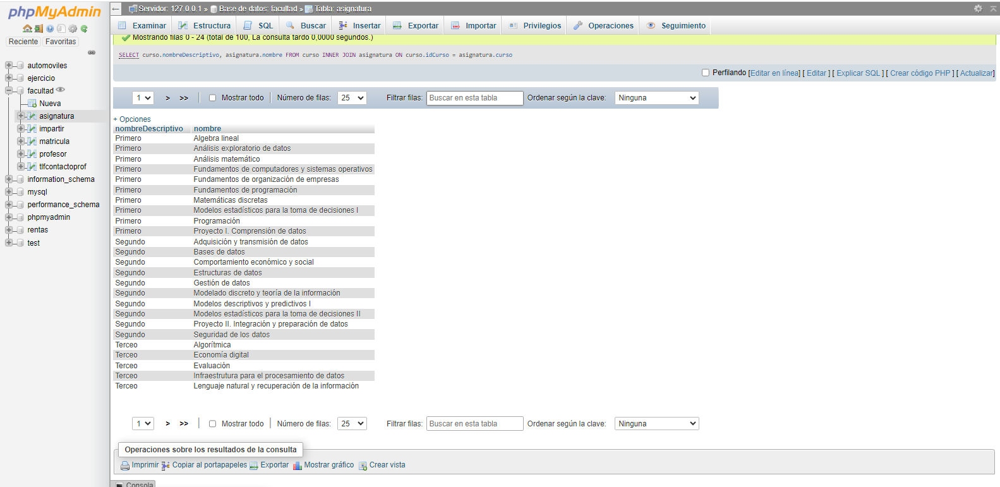
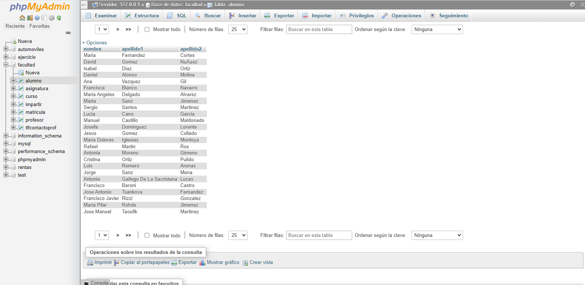
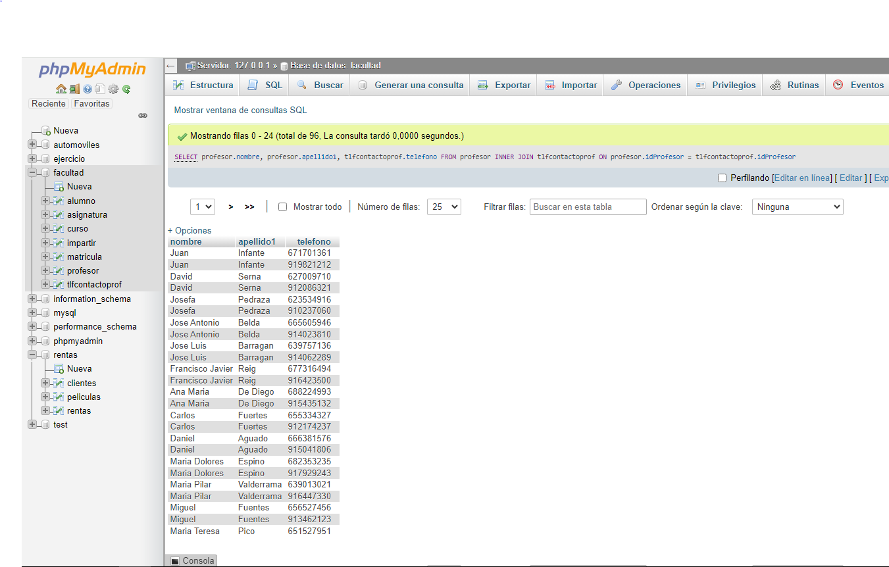
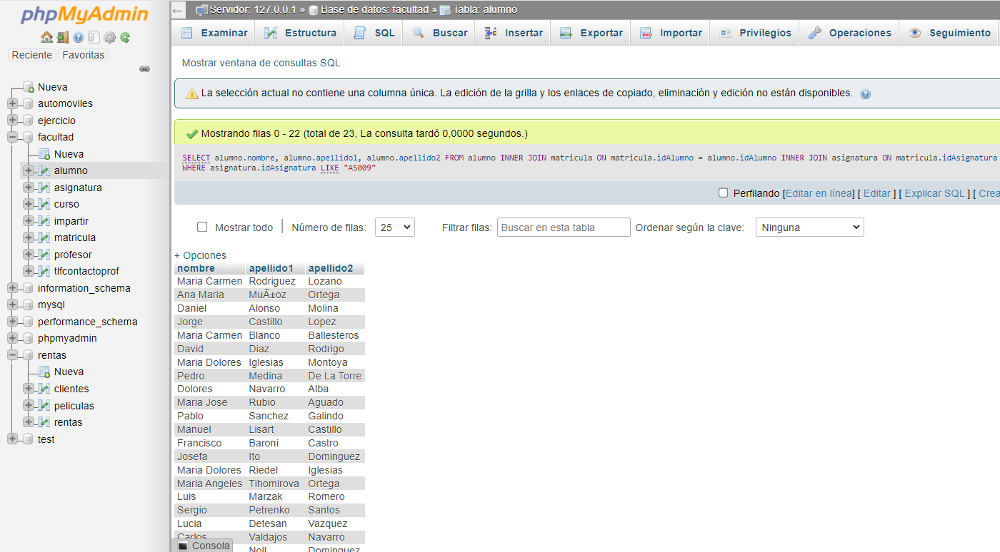
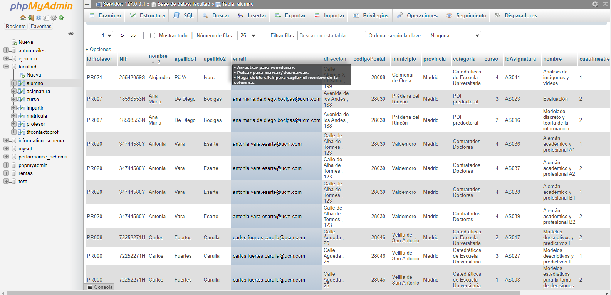
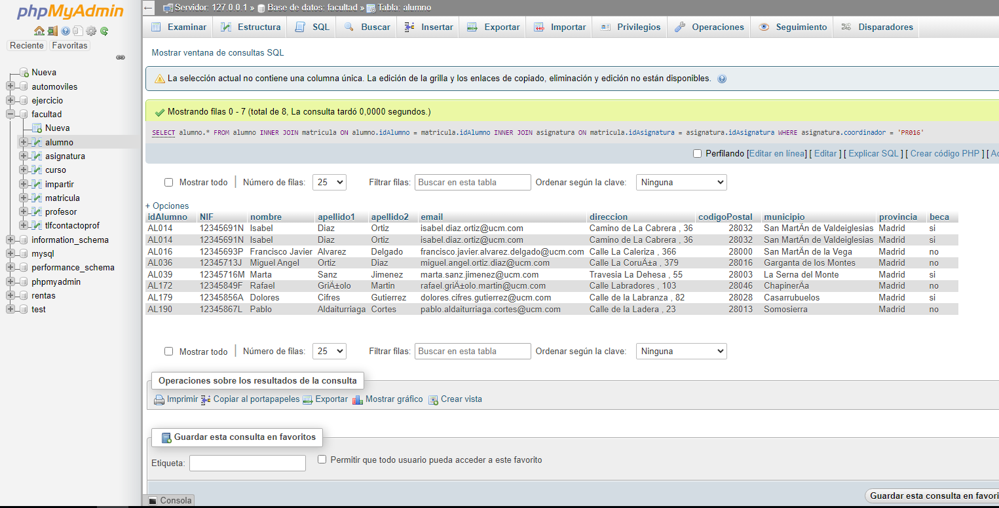
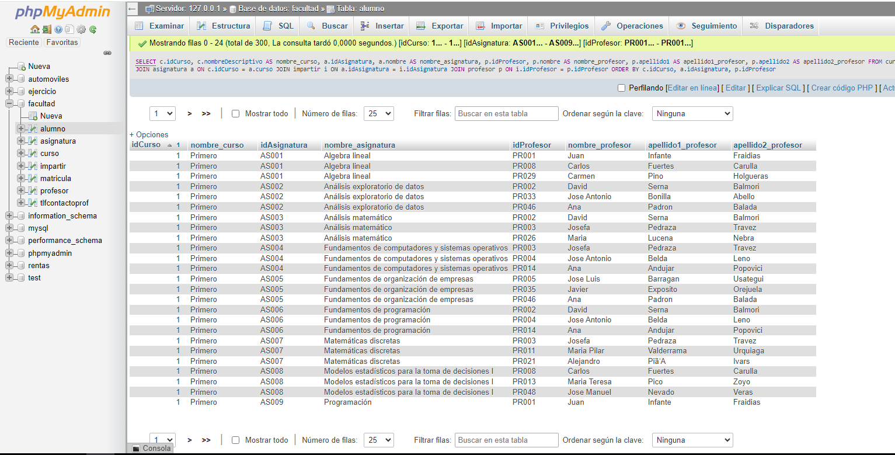
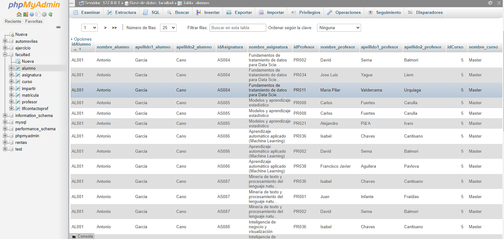

Proyecto final parcial 3
1- SELECT * FROM alumno;
Consulta #1. Obtener el listado de todos los alumnos de la facultad
2- SELECT curso.nombreDescriptivo, asignatura.nombre FROM curso INNER JOIN asignatura ON curso.idCurso = asignatura.curso
Consulta #2. Obtener listado de cursos(nombre) y las asignaturas que tiene
3- SELECT nombre, apellido1, apellido2 FROM alumno WHERE beca LIKE "sí";
Consulta #3. Obtner listado (nombre y apellido) del alumno que tenga beca
4- SELECT profesor.nombre, profesor.apellido1, tlfcontactoprof.telefono FROM profesor INNER JOIN tlfcontactoprof ON profesor.idProfesor = tlfcontactoprof.idProfesor
Consulta #4. Obtener listado de profesionales (nombre y apellido), y su número de contacto
5- SELECT alumno.nombre, alumno.apellido1, alumno.apellido2 FROM alumno INNER JOIN matricula ON matricula.idAlumno = alumno.idAlumno INNER JOIN asignatura ON matricula.idAsignatura = asignatura.idAsignatura WHERE asignatura.idAsignatura LIKE "AS009"
Consulta #5. Obtener listado de alumnos (todos los campos) que están inscritos a la asignatura de programacióm
SELECT curso.nombreDescriptivo, asignatura.nombre FROM curso INNER JOIN asignatura ON curso.idCurso = asignatura.curso
Consulta #6. Obtener listado de profesores y asignaturas que imparten

SELECT curso.nombreDescriptivo, asignatura.nombre FROM curso INNER JOIN asignatura ON curso.idCurso = asignatura.curso
Consulta #7. Mostrar la asignatura que tiene más alumnos inscritos y su total
SELECT curso.nombreDescriptivo, asignatura.nombre FROM curso INNER JOIN asignatura ON curso.idCurso = asignatura.curso
Consulta #8. Obtener listado de alumnos que les da clase el profesor con ID PR048 (José Manuel) sin importar en que asignatura esté inscrito
SELECT curso.nombreDescriptivo, asignatura.nombre FROM curso INNER JOIN asignatura ON curso.idCurso = asignatura.curso
Consulta #9. Obtener listado de cursos(nombre) y las asignaturas que tiene.
SELECT curso.nombreDescriptivo, asignatura.nombre FROM curso INNER JOIN asignatura ON curso.idCurso = asignatura.curso
Consulta #10. Obtener listado de cursos(nombre) y las asignaturas que tiene.
